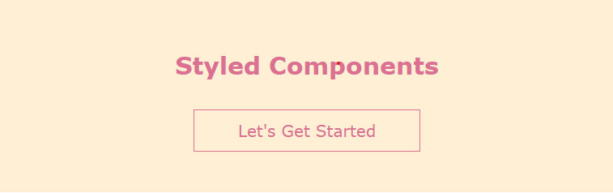
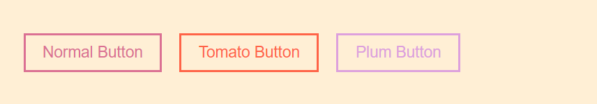
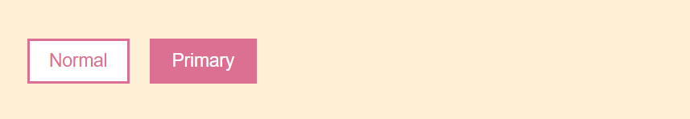
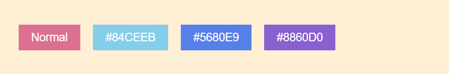
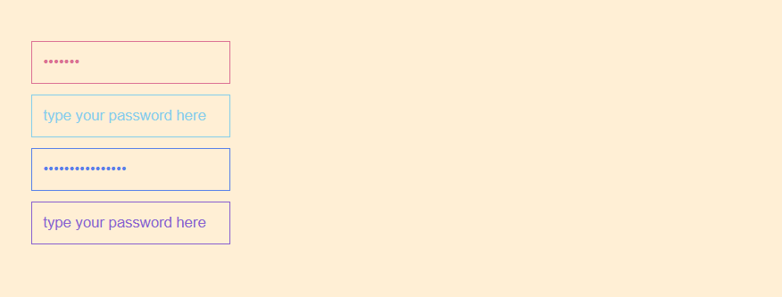

Styled Component 為將 CSS 寫成一 Component 的形式
Part 1 - Getting Started
此處使用 React + Styled Components 做結合，請先下載npm install --save styled-components
讓我們先從簡單的小範例開始

import React from 'react';
import styled from 'styled-components';
const Background = styled.div`
background-color: papayawhip;
text-align: center;
font-family: verdana;
color: palevioletred;
padding: 20px 0 40px;
`;
const Title = styled.h2`
margin: 0;
padding: 30px;
`;
const Slogan = styled.p`
width: 30%;
margin: auto;
padding: 10px 20px;
border: 1px solid palevioletred;
`;
function HomePage() {
return (
<Background>
<Title>Styled Components</Title>
<Slogan>Let's Get Started</Slogan>
</Background>
);
}
export default HomePage;
此處分為三個 components，為 Background, Title 和 Slogan,
每個 Styled Component 的宣告方式為
const component = styled.div`
font-size: 20px;
`;- styled ：表要以 Styled Component 的方式將 CSS 寫成一 Component
- div ：此部分為 html 標籤
- ` ` ：撇號內部該 component 的 CSS(SCSS) 樣式
將 CSS 結合 html 標籤結合成一 Component,
不同於之前 DOM 元素生成時才將 CSS 附加上去
Part 2 - Extending Styles

const Button = styled.button`
margin-right: 20px;
padding: 10px 20px;
border: 2px solid palevioletred;
color: palevioletred;
font-size: 18px;
background-color: transparent;
`;
const TomatoButton = styled(Button)`
color: tomato;
border-color: tomato;
`;
const PlumButton = styled(Button)`
color: plum;
border-color: plum;
`;
在 Styled Component 中，可引用之前宣告的 component 改寫樣式
const newComponent = styled(Component)`
// your new styles
`;
在上述範例中, TomatoButton 和 PlumButton 接沿用了 Button 的樣式，
僅在自已的樣式改變 color & border-color
Part 3 - Props
在 Styled Component 中，可以像一般的 Component 傳入 props，用來決定要呈現的樣式，
在官方文件中，使用 props 的方式有三種：
1. Adating Based on Props ( Prop 為 Boolean )

const Button = styled.button`
margin-right: 20px;
padding: 10px 20px;
border: 2px solid palevioletred;
font-size: 18px;
color: ${
(props) => props.primary ? 'white' : 'palevioletred'
};
background-color: ${
(props) => props.primary ? 'palevioletred' : 'white'
};
`;
return (
<>
<Button>Normal</Button>
<Button primary>Primary</Button>
</>
);
此範例中，可以設定 Button 是否有 primary 的 prop,
來決定要呈現的字的顏色 (color) 和背景色 (backround-color)
2. Passing Props ( Prop 為特定值 )

const Button = styled.button`
margin-right: 20px;
padding: 10px 20px;
border: none;
font-size: 18px;
color: white;
background-color: ${
(props) => props.buttonColor || 'palevioletred'
};
`;
return (
<>
<Button>Normal</Button>
<Button buttonColor="#84ceeb">#84CEEB</Button>
<Button buttonColor="#5680e9">#5680E9</Button>
<Button buttonColor="#8860d0">#8860D0</Button>
</>
);
我們可以將想要的 buttonColor 直接傳入 Component 中,
在這裡，buttonColor 所指定的顏色會呈現在 background-color 上
3. Attaching Additional Props ( Prop 為特定值 )

const Input = styled.input.attrs((props) => ({
type: 'password',
placeholder: 'type your password here',
color: props.inputColor || 'palevioletred',
}))`
display: block;
margin-bottom: 10px;
padding: 10px;
background-color: transparent;
border: 1px solid ${(props) => props.color};
color: ${(props) => props.color};
&::placeholder {
color: ${(props) => props.color};
}
`;
return (
<>
<Input />
<Input inputColor="#84ceeb" />
<Input inputColor="#5680e9" />
<Input inputColor="#8860d0" />
</>
);
在 html 標籤後加入 .attr((props) => ({ final-props }))，
可將 Component 傳入的 props 在回傳的物件重新整理，引用到下列的 CSS 中